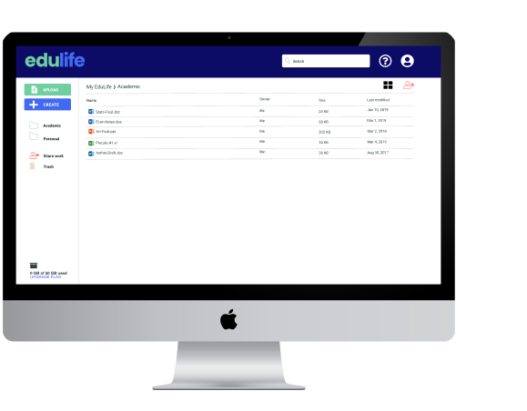
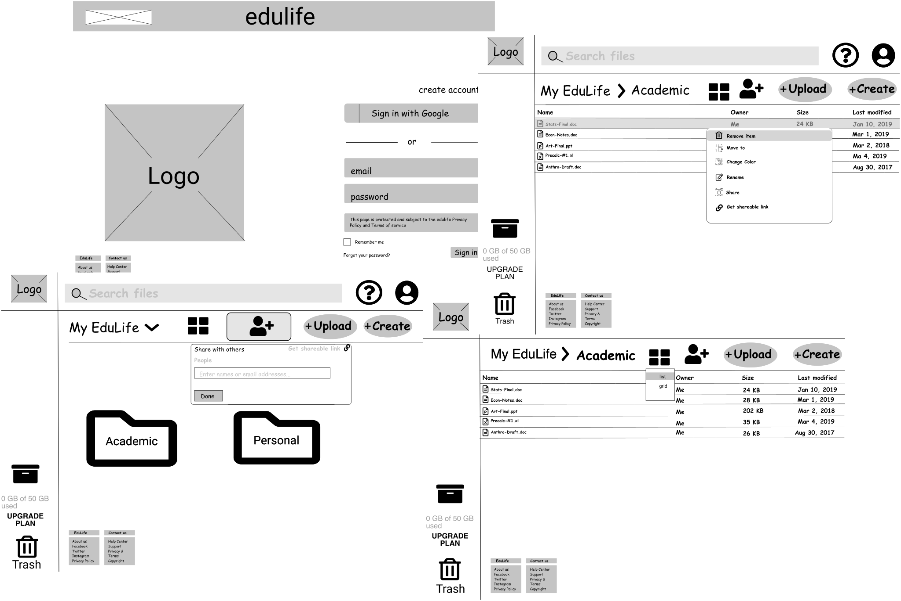
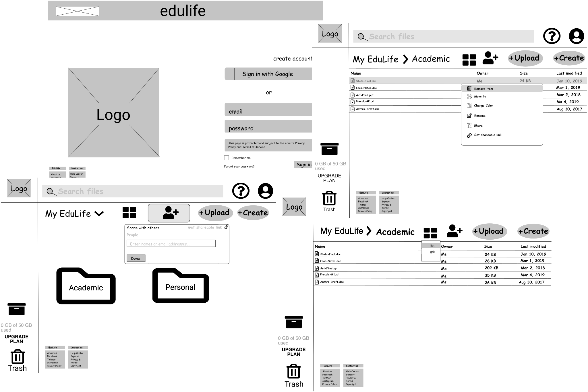

edulife
A cloud storage platform for the everyday student.
Summary
Why edulife?
.......
The cloud storage market is huge with multiple big-name competitors like Google Drive, Dropbox, etc. It is projected that by 2022, more than 72% of the global organizations will migrate to the cloud from on-premise data centers. But the market is still young and there is scope for a new entrant. The purpose of this project is to identify the right market for a new entrant and design a cloud storage service from scratch with relevant features for that market.
The Challenge
With an ever increasing competitive cloud storage platform market, a new competitor with innovative features still offers the potential for advantageous competition in the marketplace. How can I prove a new way for students to organize their personal and academic files without the added stress of user directed organization? When I carried out a survey to find out what users wanted to see in a new cloud storage product, more than any fancy feature, their main concern was the usability of existing basic features.
The SOLUTION
edulife, a cloud platform built for students, allows users, to organize, upload, create, and share their content while keeping personal and academic files organized separately, maintaining a true work-life balance.
Client
Bloc Design
DESIGN ROLES
UX Research
Competitive Analysis
User Flows
Content Strategy
Wireframing
Prototyping
Branding and Style Guide
Usability Testing
UX Design
DELIVERABLES
Competitive analysis
Survey results
User personas
Branding
Sitemap
Wireframes
Prototypes
TOOLS
Sketch
Figma
Google Forms
UsabilityHub
InVision
RESEARCH
Competitive Analysis
Learning from Existing Solutions
.......
The first step was to analyze the market to evaluate current options and find out opportunities to enter this space. Three main players in the market were chosen for this purpose - Google drive, Dropbox, and Pinterest.
While leading cloud storage competitors such as Google Drive and Dropbox offer simplicity of use and multi-platform features, dashboards can be difficult to manage with limited file sorting options and need for secure internet connection. Pinterest, an excellent platform for organization, storage of interests, and networking, lacks document sharing.
User research
Understanding Users' Expectations & Frustrations
.......
I conducted a survey to understand the needs of users. This survey was sent out through social media accounts, subreddits, and friends.
The main purpose of this survey was to answer the following questions:
-
1. Ideal target group for a new cloud service product?
-
2. How are people using such a service now? and Why?
-
3. What features do they use regularly?
4. What problems can I solve with a new product?
Key Takeaways
The most critical thing that I learned during the survey was more than new features, users were concerned about the usability of basic features. Current cloud storage application make it difficult to organize files, folders, and photos while while 75% of users cite uploading files and file organization as the most important features when using storage apps. When users were asked what they DO NOT like about their present services, these were their responses:
-
* "Saved a file in the wrong folder and had trouble finding it"
-
* "I run out of storage space quickly and find myself deleting files to save space"
-
* "Keeping my personal and professional files separate is difficult"
These frustrations led to the same problem - unintuitive designs.
Lacking an intuitive user flow that assists users to freely navigate the platform without difficulty was the common concern among cloud storage users.
Other Key Points
85% of the users accessed their cloud storage service through larger devies - Desktop, Laptop.
85% use ther service for a work/academic-related purpose.
90% store documents and photos in their cloud.
User Personas
Defining the Solution
.......
Based on the competitive analysis and user survey, I identified the possible characteristics of a new entrant through hypothetical archetypes of real users as defined by their goals and frustrations.
High School Media Arts Teacher, 38 years old
- To upload and organize files
- To maintain files needed for different projects in one place.
Sometimes my personal video files wind up in my curriculum files and the process of self organization without Google Drive’s help is often frustrating. I want a platform that can minimize the stress."
Frustrations
- Multiple steps to upload files
- Often forgets what documents he has shared with whom.
- Forgets to organize files that are uploaded.
Graduate Student, 27 years old
- Be able to save images and articles from the internet that interest her.
- Share files with classmates quickly.
- Keep files from different project organized and available to others working on the project.
- Be able to get instant feedback from classmates.
"My browser usually has over 20 tabs open at any one time so that I can reference PDFs back to my notes."
- Sharing files with multiple people takes time
- Doesn’t have a place to save content from the web except by bookmarking, often time consuming
- Doesn’t know when another classmate has updated or commented on a document unless they directly email her.
INFORMATION ARCHITECTURE
User stories & flows
With the MVP (minimum viable product) in mind, I listed the highest priority tasks 'Jared' and 'Charlotte' would want to see in their desired service. From the list, I selected the highest priority user stories including a select few lower and medium priority ones to form the MVP
Stories
- I want to upload files
- I want to create new folders
- I want to upload folders
- I want to organize uploaded content into various folders
- I want to share uploaded files/folders with other users using a link
Features for MVP
- Upload files
- Upload folders
- Search
- Organize
- Share via Email & link
- Create a folder
INFORMATION ARCHITECTURE
User Flows & Site Maps
Defining the Content Strategy
......
The next process involved accounting for all the steps a user takes while navigating through various features identified in the user stories. I created 8 different user flows to map out the process and to identify the hierarchy of these element, focusing on finding ways to address the main pain points.
Sketches & Low Fidelity Wireframes
Building the Structure
......
I started with paper sketching and once I figured out the flow and placement of various elements, I used Figma to design wireframes.
 

Visual Design
Brand Logo
Creating a Brand Identity
......
The “edulife” name, combining education and life, allows the academic and personal lifestyles to coexist in the same cloud through minimizing the stress of self organization.
Visual Design
Keeping Designs Bold & Modern
.......
A bold and pastel color palette was chosen to convey the boldness and simplicity that edulife guarantees to all user. Roboto and Poppins, geometric sans serif typefaces were chosen for monolinear letterforms and open curves.
EVALUATING THE DESIGN
Preference Testing
Testing edulife's Usability
.......
Using my high fideltiy prototype, I conducted scenario-based usability tests in-person and virtually to assess the product’s usability and users' preferences towards specific pages before finalizing the design. I used the findings to iterate on my design.
ACESSING USER DASHBOARD
When going through the task of accessing their dashboard, users reported that they did not find it ideal for icons to be colored in black, finding it unappealing and uninviting. Additionally, they cited that the screen with color coded actions at the top before the files was more intuitive. With this feedback, I iterated on the dashboard screens. Users responded to the new iteration very positively.
ACCESSING ONBOARDING PAGE
When given the task of accessing the onboarding screen, users exhibited confusion when looking at both pages; the split screen allowed for too much contrast in the background and overall found the page too crowded to complete the necessary tasks. To meet web accessibility guidelines and usability standards, I created a homepage and dashboard screen to ease the onboarding processes. Further testing proved this to be a positive change as users completed the onboarding tests with ease.
A/B TESTING
85%
preferred a blue screen when making accessing the homepage because CTA buttons were easier to see and choosing the split screen onboarding page citing centered information as more intuitive.
Final Prototype
Concluding edulife
Bringing it all Together
.......
The MVP for this design addresses the main problem we set out to solve in the cloud storage space - Unintuitive design and frustrating navigability and organization. edulife delivers a clean and friendly UI for users within the academic space to save files, create documents, and share and collaborate on content. Through multiple rounds of A/B testing and over 150 screens of iterations, I could provide a better solution by focusing on the foundations of intuitive design such as visibility, feedback, affordance, expectation, efficiency.